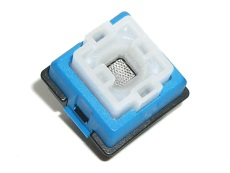
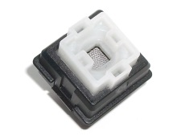

Tasten som Logitech laget i sammarbeid med Omron. Tasten har en aktiveringskraft på 45 centiNewton. Tasten har et lineært tastetrykk, og sammenlignes ofte med Cherry sin MX Brown.

Tasten som Logitech laget i sammarbeid med Omron. Dette er version 2, og er bare en forbedring av Romer G Blue. Den har de samme spesifikasjonene, og alle nye tastatur fra Logitech har Romer G Black.